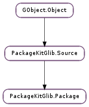

| static | id_build(name, version, arch, data) |
| static | id_check(package_id) |
| static | id_equal_fuzzy_arch(package_id1, package_id2) |
| static | id_split(package_id) |
| static | id_test(user_data) |
| static | id_to_printable(package_id) |
| static | ids_add_id(package_ids, package_id) |
| static | ids_add_ids(package_ids, package_ids_new) |
| static | ids_check(package_ids) |
| static | ids_from_id(package_id) |
| static | ids_from_string(package_id) |
| static | ids_present_id(package_ids, package_id) |
| static | ids_remove_id(package_ids, package_id) |
| static | ids_test(user_data) |
| static | ids_to_string(package_ids) |
| static | new() |
| static | test(user_data) |
| equal(package2) | |
| equal_id(package2) | |
| get_arch() | |
| get_data() | |
| get_id() | |
| get_info() | |
| get_name() | |
| get_summary() | |
| get_version() | |
| parse(data) | |
| print_() | |
| set_id(package_id) | |
| set_info(info) | |
| set_summary(summary) |
| Name | Type | Flags | Description |
|---|---|---|---|
| description | str | r/w | The package description |
| group | int | r/w | The package group |
| info | int | r/w | The PackageKitGlib.InfoEnum package type, e.g. PackageKitGlib.InfoEnum.NORMAL |
| license | str | r/w | The package license |
| package-id | str | r | The full package_id, e.g. ‘gnome-power-manager;0.1.2;i386;fedora’ |
| size | int | r/w | The package size |
| summary | str | r/w | The package summary |
| update-bugzilla-urls | list | r/w | The update bugzilla URLs |
| update-changelog | str | r/w | The update ChangeLog |
| update-cve-urls | list | r/w | The update CVE URLs |
| update-issued | str | r/w | When the update was issued |
| update-obsoletes | str | r/w | The update packages that are obsoleted |
| update-restart | int | r/w | The update restart type |
| update-state | int | r/w | The update state |
| update-text | str | r/w | The update description |
| update-updated | str | r/w | When the update was last updated |
| update-updates | str | r/w | The update packages |
| update-vendor-urls | list | r/w | The update vendor URLs |
| url | str | r/w | The package homepage URL |
| Name | Parameters | Return | Description |
|---|---|---|---|
| changed | The ::changed signal is emitted when the package data may have changed. |
| Name | Type | Access |
|---|---|---|
| parent | PackageKitGlib.Source | r |
| priv | PackageKitGlib.PackagePrivate | r |
Bases: PackageKitGlib.Source
| Parameters: | |
|---|---|
| Returns: | returns a string to form the PackageID. |
| Return type: |
| Parameters: | package_id (str) – the PackageID to check |
|---|---|
| Returns: | True if the PackageID was well formed. |
| Return type: | bool |
| Parameters: | |
|---|---|
| Returns: | True if the PackageIDs can be considered equal. |
| Return type: |
Only compare the name, version, and arch, where the architecture will fuzzy match with i*86.
| Parameters: | package_id (str) – the ; delimited PackageID to split |
|---|---|
| Returns: | a GLib.Strv or None if invalid, use GLib.strfreev () to free |
| Return type: | [str] |
Splits a PackageID into the correct number of parts, checking the correct number of delimiters are present.
| Parameters: | user_data (object) – |
|---|
| Parameters: | package_id (str) – the PackageID |
|---|---|
| Returns: | the name-version.arch formatted string, use GLib.free () to free. |
| Return type: | str |
Formats the PackageID to be printable to the user.
| Parameters: | |
|---|---|
| Returns: | the new list, free GLib.strfreev () |
| Return type: | [str] |
Adds a package_id to an existing list.
| Parameters: | |
|---|---|
| Returns: | the new list, free GLib.strfreev () |
| Return type: | [str] |
Adds a package_id to an existing list.
| Parameters: | package_ids (str) – a string array of package_id’s |
|---|---|
| Returns: | True if the package_ids are all valid. |
| Return type: | bool |
Check the string array of package_id’s for validity
| Parameters: | package_id (str) – A single package_id |
|---|---|
| Returns: | the string array, or None if invalid, free with GLib.strfreev () |
| Return type: | [str] |
Form a composite string array of package_id’s from a single package_id
| Parameters: | package_id (str) – A single package_id |
|---|---|
| Returns: | the string array, or None if invalid, free with GLib.strfreev () |
| Return type: | [str] |
Form a composite string array of package_id’s from a delimited string
| Parameters: | |
|---|---|
| Returns: | True if the package ID is present |
| Return type: |
Finds out if a package ID is present in the list.
| Parameters: | |
|---|---|
| Returns: | the new list, free GLib.strfreev () |
| Return type: | [str] |
Removes a package ID from the the list.
| Parameters: | user_data (object) – |
|---|
| Parameters: | package_ids (str) – a string array of package_id’s |
|---|---|
| Returns: | a string representation of all the package_id’s. |
| Return type: | str |
Cats the string array of package_id’s into one delimited string
| Returns: | a new PackageKitGlib.Package object. |
|---|---|
| Return type: | PackageKitGlib.Package |
| Parameters: | user_data (object) – |
|---|
| Parameters: | package2 (PackageKitGlib.Package) – a valid PackageKitGlib.Package instance |
|---|---|
| Returns: | True if the packages have the same package_id, info and summary. |
| Return type: | bool |
Do the PackageKitGlib.Package ‘s have the same ID.
| Parameters: | package2 (PackageKitGlib.Package) – a valid PackageKitGlib.Package instance |
|---|---|
| Returns: | True if the packages have the same package_id. |
| Return type: | bool |
Do the PackageKitGlib.Package ‘s have the same ID.
| Returns: | the data, or None if unset |
|---|---|
| Return type: | str |
Gets the package data, which is usually the repository ID that contains the package. Special ID’s include “installed” for installed packages, and “local” for local packages that exist on disk but not in a repoitory.
| Returns: | the PackageKitGlib.InfoEnum |
|---|---|
| Return type: | PackageKitGlib.InfoEnum |
Gets the package object ID
| Parameters: | data (str) – the data describing the package |
|---|---|
| Raises: | GLib.GError |
| Returns: | True if the data was parsed correcty |
| Return type: | bool |
Parses the data to populate the PackageKitGlib.Package.
Prints details about the package to standard out.
| Parameters: | package_id (str) – the valid package_id |
|---|---|
| Raises: | GLib.GError |
| Returns: | True if the package_id was set |
| Return type: | bool |
Sets the package object to have the given ID
| Parameters: | info (PackageKitGlib.InfoEnum) – the PackageKitGlib.InfoEnum |
|---|
Sets the package info enum.